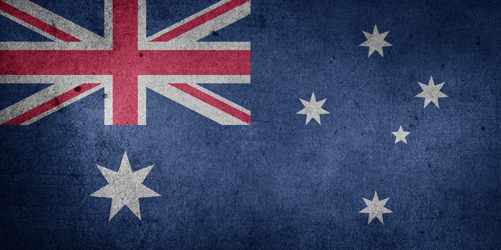
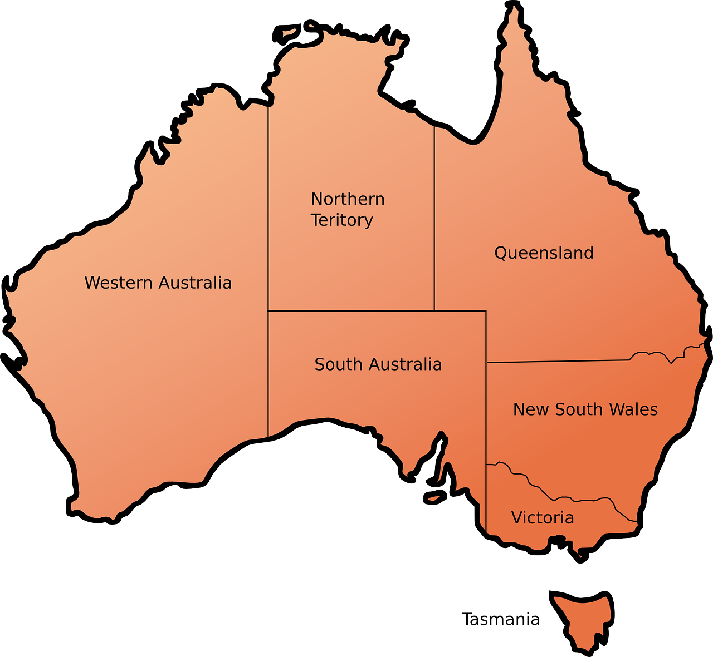
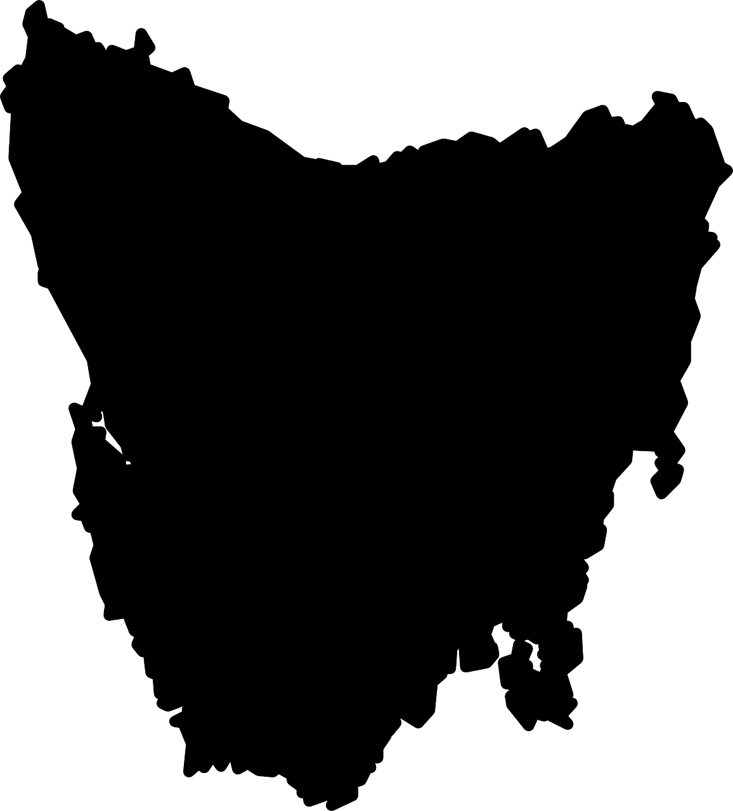

The Land of Oz
My Country: Australia



Interesting Aussie Facts
- Capital City:
- Population:
- Population Density:
- Irrelevant. There's plenty of km² for each and every one of us!
- States and Territories*:
- New South Wales
- Victoria
- Queensland
- Western Australia
- South Australia
- Tasmania
- Northern Territory*
- Australian Capital Territory*
- Official Language:
- English. British English! It's ZED not ZEE!
- System of Government:
- Constitutional Monarchy
- Representative Democracy
- Prime Minister:
- National Anthem:
- Currency:
- System of Measurement:
- Iconic Aussie Songs:
- The Seekers - I am Australian
- John Farnham - You're the Voice
- Men at Work - Down Under
- Peter Allan - I Still Call Australia Home
- Traditional - Waltzing Matilda
- National Pastimes:
- BBQ and beers and at the beach
- National Beer:
- Anything but Fosters - tastes like p!ss!
- Deadly Creatures:
- LOADS - Snakes, spiders, scorpions and other creepy crawlies, wild dogs, Tassie Devils, sharks, stingrays, jellyfish, crocodiles and more!
- Native Animals:
- Kangaroo
- Emu
- Koala
- Wombat
- Echidna
- Platypus
- Dingo
- Tasmanian Devil
- National Sports:
- Cricket
- Australian Rules Football
- Famous Places:
- Sydney Opera House
- Great Barrier Reef
- Kakadu National Park
- Uluru
- Melbourne Cricket Ground
- Barossa Valley
- Bondi Beach
- Daintree Rainforest
- Whitsunday Islands
- Cradle Mountain
- Whitehaven Beach
- Sydney Harbour Bridge
- Blue Mountains
- Port Arthur
- Nullabor Plain
- Great Ocean Road
- Aussie War Cry:
- Ozzie Ozzie Ozzie. Oi Oi Oi.
Ozzie, Oi.
Ozzie, Oi.
Ozzie Ozzie Ozzie. Oi Oi Oi.
Famous Aussies
- Hugh Jackman
- John Farnham
- Barry Humphries
- Donald Bradman
- Ned Kelly
- Rupert Murdoch
- Nicole Kidman
- Portia De Rossi
- Crown Princess Mary
- Olivia Newton-John
- Dawn Fraser
- Simon Baker
- Crocodile Dundee
- Heath Ledger
- Banjo Patterson
- Mark "Chopper" Reid
- Rod Laver
- Steve Irwin
- Cathy Freeman